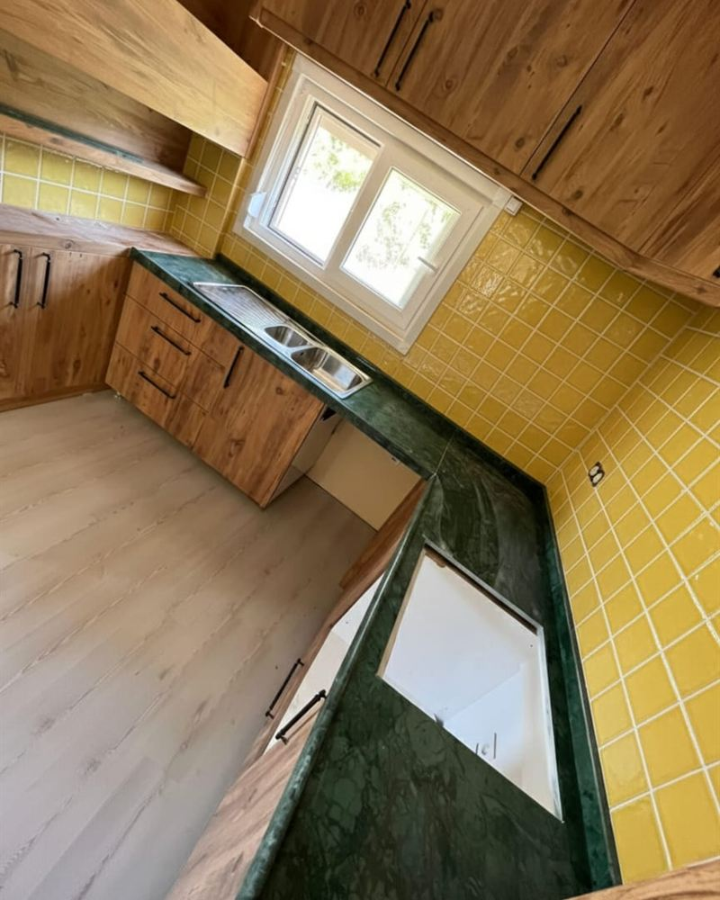
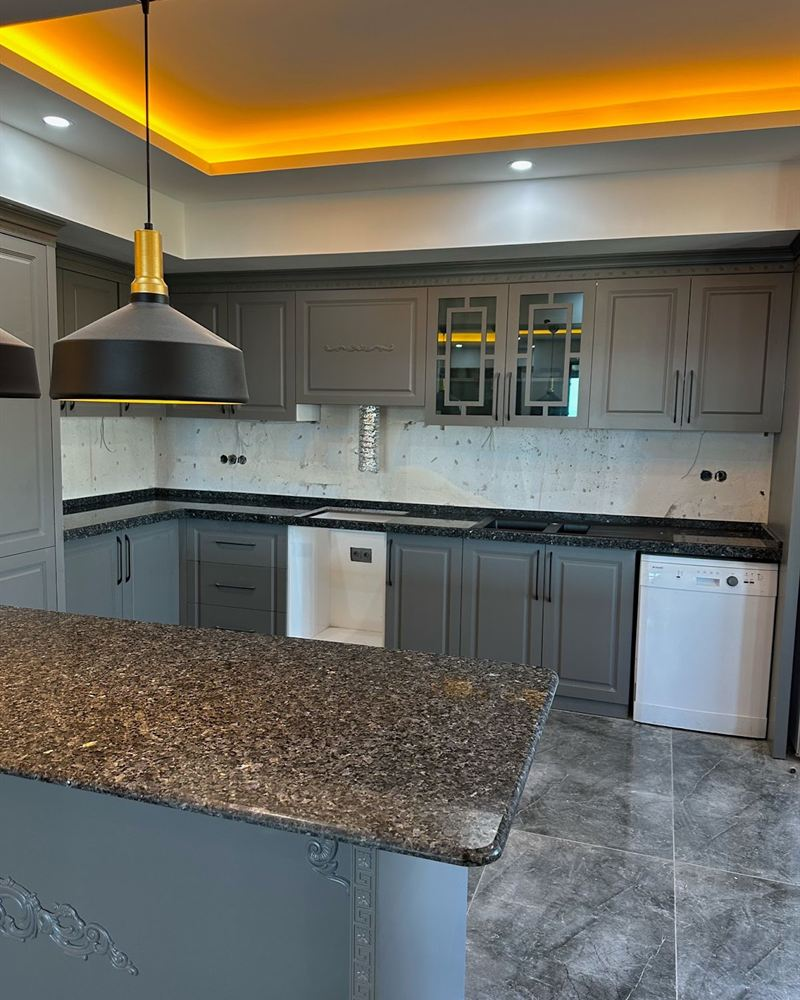
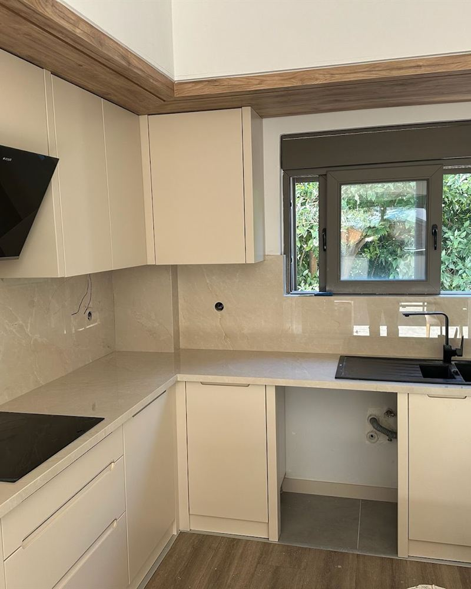
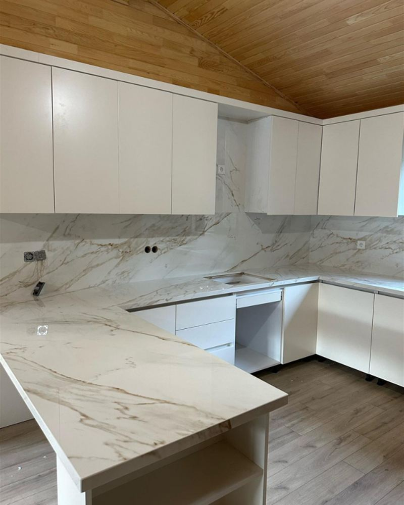
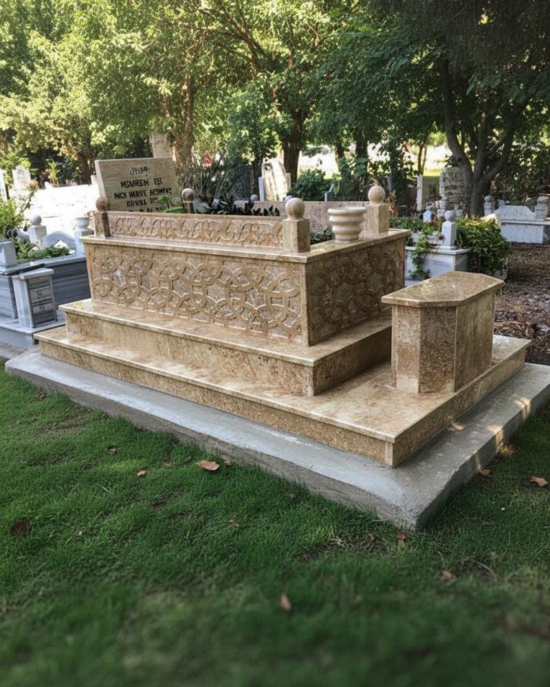

Muratpaşa atölyesi • Antalya genelinde montaj
Mermer, granit, çimstone ve porselen tezgahı atölyede keser, evinizde ölçer, randevunuzde monte ederiz. Google Sites’tan çıkan bu yeni sitede amaç basit: net bilgi, insan gibi konuşmak, işi zamanında bitirmek.
Antalya Modern Mermer & Granit, Muratpaşa Yeşildere’deki atölyesinde mutfak tezgahı ve doğal taş işleri üretir. Lara, Kepez, Konyaaltı, Döşemealtı, Manavgat ve Alanya başta olmak üzere Antalya ilçelerine ölçü alıp montaj yapar. Teklif için ölçü, ilçe ve tercih ettiğiniz taş türü yeterlidir.

Ustalık
Bu işte acele edilen yer belli olur: birleşim, evye boşluğu, duvar payı. Biz taşı “lüks obje” gibi anlatmak yerine evinizde her gün temas edeceğiniz bir tezgah gibi ele alırız. Damarın yönü, kalınlık, kenar profili ve su tutmayan derz; bunlar katalog cümlesi değil, mutfakta fark edilen ayrıntılardır.
Google Sites dönemindeki sayfa yapısını koruduk: ürünler ayrı, ilçeler ayrı, iletişim tek yerde. Üstüne mobil önce düzen, açık meta etiketleri ve arama motorlarının (ve yapay zekâ cevaplarının) anlayacağı düz cümleler ekledik.
Ürün grupları
Beş ana iş. Hepsi Antalya iklimine ve günlük kullanıma göre konuşulur; stok fotoğraf ezberiyle değil.

Doğal damar
Lara ve Konyaaltı mutfaklarında aranan sıcak, eşsiz damar. Isıya karşı bilinçli kullanımla uzun ömürlüdür.
Mermer tezgahlar →
Sert yüzey
Yoğun kullanılan mutfak ve otel projeleri için çizilmeye dayanıklı granit.
Granit bak →
Leke tutmaz
Kepez ve Döşemealtı’ndaki yeni konutlarda hijyenik, gözeneksiz kuvars.
Kuvars modelleri →
İnce & güçlü
Isı ve lekeye karşı güçlü, çağdaş mutfaklar için ince porselen yüzey.
Porselen tezgah →
Saygılı işçilik
İklime dayanıklı mermer ve granit mezar; ölçülü, sade, sağlam.
Mezar modelleri →Süreç
İlçe, mutfak fotoğrafı ve istediğiniz taş türünü yazın. Aynı gün dönüş yapılır.
Evde veya şantiyede ölçü alınır. Köşe, evye, ocak ve duvar payı not edilir.
Kesim, kenar, cilâ ve kontrol Muratpaşa’daki atölyede yapılır.
Randevu günü teslim ve montaj. Derz, seviye ve temizlik işin parçasıdır.
Hizmet ağı
Atölye Muratpaşa’da. Montaj ekibi ilçelere çıkar. Aşağıdaki sayfalar yerel arama ve yapay zekâ cevapları için ayrı yazıldı; hepsi aynı iş, aynı telefon.
Lara, Fener, Yeşilbahçe, Şirinyalı
Uncalı, Gürsu, Liman, Hurma
Yeni konut ve kuvars talebi
Villa ve modern mutfaklar
Mahmutlar, Konaklı, otel işi
Side ve sahil projeleri
Villa ve turizm tesisleri
Kıyı konutları
Butik villa tezgahları
“Tezgahı zamanında bitirdiler, iletişimleri çok iyiydi. Mutfakta duran bir iş oldu.”
Yandex harita yorumu — Antalya Modern Mermer & GranitSık sorulanlar
Metrekare, kalınlık, kenar, evye deliği ve montaj mesafesi fiyatı değiştirir. Ölçüsüz rakam yanıltır. Keşif sonrası yazılı teklif verilir.
Atölye pazartesi–cumartesi 08:30–18:30 aralığında açıktır. Pazar günü acil montaj randevu ile konuşulur.
Evet. Mermer ve granit mezar modelleri, montaj ve iklim koşullarına uygun malzeme seçimi Antalya ilçelerinde yapılır.
Teklif
Mesajınız doğrudan WhatsApp’a düşer. İsterseniz arayın.